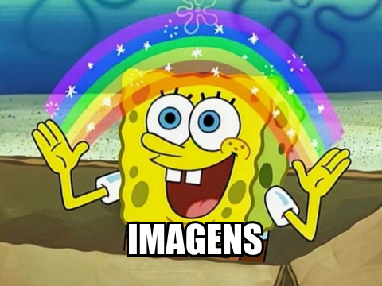

Digamos que você tenha um produto, um portfólio ou apenas uma ideia que deseja compartilhar com todos em seu próprio site. Antes de publicá-lo na internet, você deseja torná-lo atraente, profissional ou pelo menos decente.
Qual é a primeira coisa em que você precisa trabalhar?
Conteúdo
O objetivo do design é aprimorar a apresentação do conteúdo ao qual é aplicado. Pode parecer óbvio, mas o conteúdo é o elemento principal de um site e não deve ser estabelecido como uma reflexão tardia.
O conteúdo escrito, como o parágrafo que você está lendo atualmente, representa mais de 90% da Web. O estilo desse conteúdo textual será de grande ajuda.
Vamos supor que você já finalizou o conteúdo que deseja publicar e acabou de criar um arquivo style.css vazio, qual é a primeira regra que você pode escrever?
Centralização
Linhas longas de texto podem ser difíceis de analisar e, portanto, difíceis de ler. Definir um limite de caracteres por linha aprimora muito a legibilidade e o apelo de uma parede de texto.
body {
margin: 0 auto;
max-width: 50em;
}
Depois de estilizar os blocos de texto, que tal estilizar o próprio texto?
Font family
A fonte do navegador é padronizada como "Times", que pode parecer desagradável (principalmente porque é uma fonte "sem estilo"). Mudar para uma fonte sans-serif como "Helvetica" ou "Arial" pode melhorar bastante a aparência da sua página.
body {
font-family: "Helvetica", "Arial", sans-serif;
}
Se você quiser usar uma fonte com serifa, tente "Georgia".
Embora isso torne o texto mais legal, vamos também torná-lo atraentevamos também torná-lo mais legível.
Espacamento
Quando uma página parece "quebrada" para um usuário, geralmente é um problema de espaçamento. Fornecer espaço ao redor e dentro do seu conteúdo pode aumentar o apelo da sua página.
body {
line-height: 1.5;
padding: 4em 1em;
}
h2 {
margin-top: 1em;
padding-top: 1em;
}
Embora o layout tenha melhorado bastante até agora, vamos aplicar alterações mais sutis.
Cor & contraste
O texto em preto sobre fundo branco pode ser severo para os olhos. Optar por um tom mais suave de preto para o corpo do texto torna a página mais confortável de ler.
body {
color: #555;
}
E, para manter um nível decente de contraste, vamos escolher um tom mais escuro para palavras importantes
h1,
h2,
strong {
color: #333;
}
Enquanto a maior parte da página foi aprimorada visualmente, alguns elementos (como os trechos de código) ainda parecem deslocados.
Equilibrio
São necessários apenas alguns toques adicionais para corrigir o equilíbrio da página:
code,
pre {
background: #eee;
}
code {
padding: 2px 4px;
vertical-align: text-bottom;
}
pre {
padding: 1em;
}
Nesse ponto, convém destacar sua página e dar-lhe identidade.
Cores primarias
A maioria das marcas tem uma cor primária que age como um sotaque visual. Em um site, esse sotaque pode ser usado para enfatizar elementos interativos, como links.
a {
color: #e81c4f;
}
Mas, para manter o equilíbrio, precisaremos de algumas cores adicionais.
Cores secundárias
A cor de destaque pode ser complementada com tons mais sutis, para serem usados em bordas, planos de fundo ou até no texto do corpo.
body {
color: #566b78;
}
code,
pre {
background: #f5f7f9;
border-bottom: 1px solid #d8dee9;
color: #a7adba;
}
pre {
border-left: 2px solid #69c;
}
Depois de mudar as tonalidades, por que não mudar as formas...
Fonte personalizada
Como o texto é o conteúdo principal de uma página da web, o uso de uma fonte personalizada fornece à página uma identidade ainda mais perceptível.
Enquanto você pode incorporar sua própria fonte da web ou usar um serviço on-line como o Typekit, mas vamos usar a fonte "Roboto" do serviço gratuito do: Google Fonts
@import 'https://fonts.googleapis.com/css?family=Roboto:300,400,500';
body {
font-family: "Roboto", "Helvetica", "Arial", sans-serif;
}
Depois de aprimorar sua identidade por meio de texto, que tal adicionar mil palavras...

Gráficos e ícones podem ser usados como ornamentos para apoiar seu conteúdo ou participar ativamente da mensagem que você deseja transmitir.
Vamos melhorar nosso cabeçalho com uma boa imagem de fundo do Unsplash
header {
background-color: #263d36;
background-image: url("header.jpg");
background-position: center top;
background-repeat: no-repeat;
background-size: cover;
line-height: 1.2;
padding: 10vw 2em;
text-align: center;
}
Vamos adicionar também uma logo
header img {
display: inline-block;
height: 120px;
vertical-align: top;
width: 120px;
}
Vamos aproveitar essa oportunidade para aprimorar os estilos de texto.
header h1 {
color: white;
font-size: 2.5em;
font-weight: 300;
}
header a {
border: 1px solid #e81c4f;
border-radius: 290486px;
color: white;
font-size: 0.6em;
letter-spacing: 0.2em;
padding: 1em 2em;
text-transform: uppercase;
text-decoration: none;
transition: none 200ms ease-out;
transition-property: color, background;
}
header a:hover {
background: #e81c4f;
color: white;
}
E voilà!
Projetamos uma página decente em apenas alguns minutos, seguindo os princípios básicos do design da web. Há apenas uma ultima coisa que resta fazer...
Agradecer ao Léo 😃!
Que fazendo seus estúdos conseguiu traduzir a pagina feita por Jeremy Thomas.